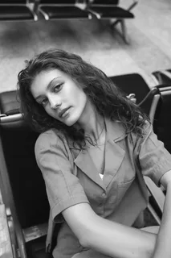

Обо мне
ИСТОРИЯ, СТОЯЩАЯ ЗА ОБЪЕКТИВОМ

ЗАПЕЧАТЛЕВАНИЕ ВЕЧНЫХ МОМЕНТОВ
Мой путь в фотографии начался с желания показать красоту в обыденности. Каждый кадр для меня — это не просто изображение, а история, переданная через игру света и тени. Я специализируюсь на архитектурной и портретной съемке, находя вдохновение в геометрии Дубая.
Сотрудничая с ведущими агентствами и частными клиентами, я стремлюсь создать визуальный язык, который понятен без слов. Мои работы — это отражение моего видения мира, где каждая деталь имеет значение.
СТРАСТЬ
Посвятил себя искусству визуального повествования.
ПРЕВОСХОДСТВО
Мы стремимся к обеспечению исключительного качества.
ЗРЕНИЕ
Взгляд на мир с уникальной точки зрения.
АУТЕНТИЧНОСТЬ
Запечатление подлинных моментов и эмоций.
ОПЫТ
ФОТОГРАФ-ФРИЛАНСЕР
Работа с международными брендами в Дубае и создание частных портфолио.
СТУДИЙНЫЙ ФОТОГРАФ
Ведущий фотограф в творческой студии, специализация на коммерческих съемках.